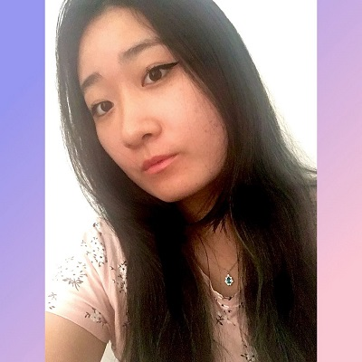

- Home
- >
- Currículo
Currículo
Dados Pessoais

Nome:
Jennifer Yurie Hata
Data de Nascimento:
09 Novembro 2000
Residência:
Mogi das Cruzes, Brasil
Idiomas:
Português (Nativo)
Inglês
Japonês
Sobre Mim
Meu nome é Jennifer, tenho 20 anos, faço Engenharia da Computação na UNIFEI de Itajubá.
Em março entrei para a equipe que desenvolve carros de F1 Cheetah Racing, e atualmente sou coordenadora de marketing. A equipe Cheetah me trouxe diversas experiências onde também pude desenvolver minha competência profissional, abrangendo o CHA por completo (Competência, Habilidade e Atitude) o que acredito ser essencial no meio profissional. Pude trazer parcerias para o cheetah e dar um upgrade no marketing.
Meu sonho segue como trabalhar na área de desenvolvimento e programação, e no meu auge consegui quebrar mais barreiras, que seria meu sonho de fazer parte da minha primeira empresa.
Em Agosto entrei para a Asimov, que é responsável por desenvolver sites, sistemas e que trabalha com programação. Eu almejo crescer com a empresa, e poder crescer junto com ela. Por fim, quero poder fazer a diferença na Asimov, poder deixar o meu legado nala.
Educação
2020-2024
Engenharia da Computação / Graduação / UNIFEI
Experiência de Trabalho
2021
Membro - Asimov Jr - Itajubá
2021
Coordenadora de Marketing - Cheetah Racing - Itajubá
Contato
jennihata@gmail.com
(11) 94106-0911
← Voltar ao início